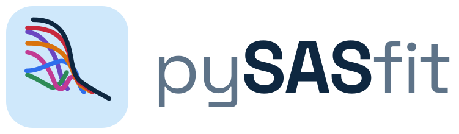
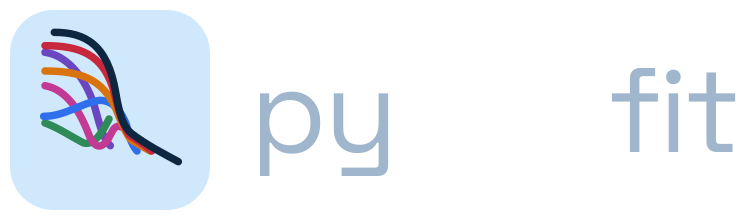
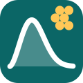

pySASfit


Python tools for small-angle scattering (SANS/SAXS) from the SASfit project, in one installable package
pysasfit: from the raw detector data (reduction with exact error propagation) to models, fits and inversions.
Every tool can be used from a script and from a Qt GUI; pysasfit-gui opens all of them as tabs of one window
(The launcher: all tools in one window).
pip install -e ".[gui,sasred,toolbox]" # from a checkout of github.com/SASfit/pySASfit
pysasfit-gui
SINQ SANS-I raw data to I(q) with exact first-order propagation of every uncertainty source: run table, beam centre, suggested and drawn masks, live radial average, NXcanSAS output with covariance and error budget.
SASfit’s plugin and libsasfit model functions via ctypes, combined into mixtures, plotted and fitted in an
interactive explorer (pysasfit-explorer) with several optimisers and saved projects. Manual with screenshots
and Python examples, plus the reference.
Radial scattering-length-density profiles ρ(r) of spheres, cylinders and lamellae: direct Bayesian estimation (Hansen 2016) or Glatter’s two-step route.
pyINVersion: size distribution / p(r)
Fredholm inversion: size distributions and pair-distance distributions with EM, MaxEnt, Tikhonov, SVD, ARLS, Bayesian-evidence IFT and splines.
OZ solvers and 24 closures, polydisperse and multicomponent structure factors, SAS models, analytic references, fitting.
pyTOOLbox: small helpful tools
Formerly pySASbox. A local HDF5 / NeXus viewer in the spirit of myHDF5 (tree, search, line plots, heatmaps with true pixel aspect, NeXus default plots) and the metadata lister for run ranges.
Representative 3D two-phase structures from SAXS/SANS data (clipped Gaussian random fields, the SAXSMorph method): γ(r), g(r), voxel structure, its scattering, S/V and connectivity; VTK/HDF5/TIFF export, 3D view.
pySCAtter: scattering patterns
1D and 2D patterns of particles (spheres to superballs, core/shell, chains), lattices (lamellae to gyroid) and orientation distributions with the hypergeometric algorithms of Wagener & Förster; fits to pySASred 1D and 2D data.
pySEBpolymers: linked sub-units
Form factors of micelles, stars, dendrimers, bottle brushes and other structures built from linked Gaussian chains, rods, spheres, shells, disks and cylinders (SEB / Svaneborg–Pedersen formalism), drawn in a graphical designer; 3D sketch, fits to 1D data.

AUTORG, DATGNOM, GNOM, CRYSOL and DAMMIF of an ATSAS installation (installed separately, own licence) on pySASfit curves, with plots and a results table; starts PRIMUS, CHROMIXS, PEAK with the selected curve.
pyDENsity: electron-density maps
Low-resolution electron-density maps from SAXS/SANS curves with DENSS (Grant 2018; installed separately): single maps and averages with FSC resolution, isosurfaces and slices.
pyDENSSmulti: maps from several contrasts
3D maps from SANS contrast variation (and SAXS): volume fractions of the components through the contrast matrix (match points, H/D exchange), or a DENSS-Multiple-type averaged SLD map; own DENSS-type iteration.
pySLDcalculator: scattering length densities
SLD of materials and biomolecules for neutrons and X-rays (energy dependent across absorption edges): molecular volume, contrast, excess scattering length, H/D exchange and match points.
All tools as tabs of one window; every tab can be detached into its own window and attached again.
Every numerical setting that is not on the panels, with its factory value and an explanation.
Signatures and docstrings of all modules, generated from the source.
Documents built separately
document |
source |
build |
|---|---|---|
OZ report (ozLib/ozGUI documentation and multicomponent supplement) |
|
|
OZ manuscript |
|
|
inversion report (PDF of the inversion pages) |
|
|
docs/oz/latex/REVIEW.md lists what in the report and manuscript no longer matches the code. Internal working
notes from the pyOZgui development are in docs/oz/notes/.